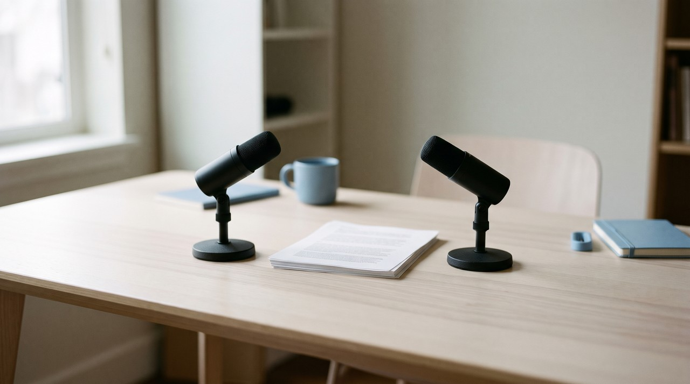
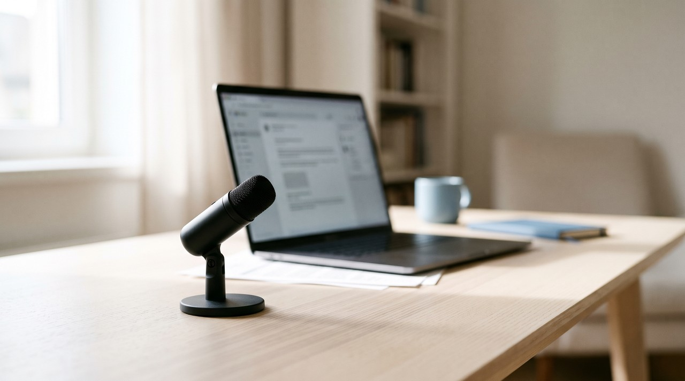

NotebookLM vs Microsoft VibeVoice: which one makes your AI podcast, and can it use your own voice?

NotebookLM, which Google's help pages now call Gemini Notebook, takes your uploaded sources and makes an Audio Overview where AI hosts write the talk and speak it. Microsoft VibeVoice-TTS only reads a script you write yourself, using up to 4 speakers for up to 90 minutes, and Microsoft took its code off GitHub on 5 September 2025. Neither official tool speaks in your own voice.
| NotebookLM Audio Overview | VibeVoice-TTS (1.5B) | VoiceClone | |
|---|---|---|---|
| Who makes it | Google, now named Gemini Notebook in its help pages | Microsoft, code removed from the official repository | Me, a Windows app |
| What you give it | Your sources: PDFs, websites, YouTube videos, audio files, Google Docs | A script you wrote | A script you wrote |
| Who writes the words | The AI hosts, from your sources | You | You |
| Whose voice speaks | Google's AI hosts | A short sample of each speaker, in the removed code and the community copy | Your own, trained on 1 to 3 minutes of your talking |
| Speakers | Two hosts, or one in The Brief | Up to 4 | One |
| Where it runs | In the browser, on Google's servers | On your own machine | On your own Windows PC, offline after setup |
| Price | Free with a Google account, higher limits on paid plans | Free download | One voice free, then $49 one time |
Written by Inam, an engineer from Pakistan who builds small desktop tools, and you can see the rest of my work at designesh.com. VoiceClone in the last column is my own app and I sell it, so keep that in mind when I talk about it. Last updated 17 November 2026.
You have probably heard those AI podcasts where two voices talk through a PDF or an article like real hosts, and you want to make one for your channel or your study notes. When you look up how to do it, two names show up everywhere: NotebookLM from Google and VibeVoice from Microsoft. Most articles treat them as two versions of the same thing, but they do very different jobs, and one of them is no longer available the way those pages claim.
If you want a podcast made from your documents with no script and no setup, use NotebookLM. If you already have a script and want several voices to read it on your own computer, that was VibeVoice, but Microsoft took that code down on 5 September 2025. And if you want the voice to be yours, neither official tool does that. I checked Google's help pages along with Microsoft's GitHub and Hugging Face pages on 17 November 2026, and I wrote down only what those pages actually state.
What is the real difference between NotebookLM and VibeVoice?
The main difference comes down to who writes the words. NotebookLM works as a research assistant: you upload sources like PDFs, websites, YouTube videos, audio files or Google Docs, and it sticks strictly to those materials. When you request an Audio Overview, the AI hosts figure out what to cover, write the conversation themselves and speak it out loud. Google's Audio Overview help page calls them deep dive discussions between AI hosts that summarise the main topics in your sources.
VibeVoice-TTS handles only the speaking part. It is a text to speech model, which means software that turns written text into spoken audio, so you have to write and bring the whole script yourself. It never reads your PDF and it never decides what to say. It simply reads the lines you hand it using the voices you pick.
Here is an easy way to picture the difference. Hand NotebookLM a 40 page report and you get two hosts explaining that report in their own words. Hand VibeVoice that exact same report and it will just read the text straight through, page after page. If you want a back and forth conversation from VibeVoice, someone has to sit down and write that script first.
Is NotebookLM now called Gemini Notebook?
Yes, at least on Google's own help pages. When I opened the NotebookLM help centre on 17 November 2026, every single page used the name Gemini Notebook, including the guide for Audio Overviews, and the old NotebookLM help links redirected straight to those pages. Most people still search for NotebookLM and most videos still use that name, so I am sticking with the old name here. If you spot Gemini Notebook in a menu or a help article, you are looking at the exact same tool.
What can a NotebookLM Audio Overview do in 2026?
Google's help page lists four formats you can pick from:
- Deep Dive, which is the default option where two hosts talk through your sources in detail.
- The Brief, where one speaker covers the main points in under two minutes.
- The Critique, where two hosts offer constructive feedback on work like an essay or a design document.
- The Debate, where two hosts argue the subject from opposing sides.
You can also pick the language, and Google notes that Audio Overviews work in 80+ languages. You can choose a Shorter, Default or Longer length, though that setting only works in English, and you can type a prompt to steer what the hosts focus on. There is a Download button as well, so you can save the audio file outside the notebook.
The usage limits work differently than they used to. Google's usage limits page explains that limits are compute based, which means they depend on how heavy your requests are, and your quota resets every 5 hours until you hit a weekly cap. A Google AI Plus plan gives you two times the standard limits and AI Pro gives you four times. Plenty of blog posts still quote a set number of audio overviews per day, even though Google's own page gives no fixed number today.
Can NotebookLM use your own voice?
No, it cannot. The help page lists everything you can adjust, and those options are the format, the language, the length and a focus prompt. A voice of your own is not on that list, and the page refers to the speakers only as AI hosts. Every Audio Overview uses Google's built in voices, so anyone else using the tool gets the exact same hosts.
There is an interactive mode where you can jump into the talk with your own voice and ask the hosts a question, though it only works in English. Even then, you are just asking a question, and the hosts still reply in their own voices. Google states that your voice and the transcribed interactions are neither stored nor shared.
As for who owns the output, the Gemini Notebook overview page states that Google will not claim ownership over the content you generate. The Audio Overview page also notes that the audio is AI generated and can have factual mistakes or audio glitches. Make sure you listen to the whole file before you share or publish it, because the hosts are summarising and a summary can easily get a detail wrong.
What happened to Microsoft VibeVoice?
Microsoft released VibeVoice-TTS on 25 August 2025. The VibeVoice GitHub page describes it as a long form, multi speaker text to speech model that can generate speech up to 90 minutes long with up to 4 separate speakers. That long runtime is why people compared it to NotebookLM, since it could voice a full podcast episode in one go.
Eleven days later, Microsoft pulled the code. A note on that same page dated 5 September 2025 explains that Microsoft saw the tool being used in ways that did not match its stated intent, so it removed the VibeVoice-TTS code from the repository. Today the model table on that page lists VibeVoice-TTS-1.5B as Disabled. Most of the updates on the page since then cover speech recognition, which does the reverse job of turning spoken audio into written text.
Two pieces remain from the project, and neither one replaces what was removed. Microsoft still hosts VibeVoice-Realtime-0.5B, but its model page notes that it supports only a single speaker and is meant for English only, so it cannot build a two host show. Meanwhile, a community fork holds a copy of the older code that Microsoft does not maintain, meaning you would be running code from strangers. I covered all of this in detail on my page about VibeVoice voice cloning.
Can you publish a podcast made with VibeVoice?
Two specific lines on Microsoft's pages matter if you are thinking about using it. The VibeVoice-1.5B model page states that the model is meant for research and development purposes only, and that Microsoft does not recommend it for commercial or real world use without further testing. That same page explains that an audible disclaimer, such as "This segment was generated by AI", gets added automatically into every generated audio file alongside an inaudible watermark.
So a podcast from the official VibeVoice model tells the listener it is AI, and its own maker says it is not meant for real world use. That works fine for a quick test, but it is a poor fit for a show you want people to subscribe to.
Language support is the other big limit. The model page notes that VibeVoice was trained only on English and Chinese data, and that other languages are not supported. Since an Audio Overview can be made in 80+ languages, NotebookLM is the one to check if you need anything outside English and Chinese, and Google's help page links straight to the supported language list.
Which one should you use?
Which one makes sense depends on what you already have ready:
- You have documents and no script, and you want to understand them or share a quick summary. Go with NotebookLM, since it is free to start and requires nothing to install.
- You want total control over every word spoken. NotebookLM will not work for that because the AI hosts write their own dialogue, so you need a text to speech tool that reads a script you wrote.
- You want several different AI voices to read your script on your own computer. That used to be VibeVoice-TTS, and with the official code taken down, only the community copy still does it, at your own risk and under a research only label.
- You want the podcast or voiceover to sound like you. Neither official tool offers that.
Where does your own voice fit in?
This exact gap is why I built VoiceClone, and it handles a much smaller job than either tool above. VoiceClone is a Windows 10 and 11 desktop app that trains a copy of your voice right on your own PC, using 1 to 3 minutes of you speaking normally. Once trained, you type in a script and it reads those words in your voice. It runs on the GPT-SoVITS engine locally on your machine, so none of your audio ever gets uploaded.

It does not try to do what NotebookLM does. It will not read your PDF, it will not write a script for you, and it gives you one voice, yours, rather than two hosts chatting back and forth. It is made for English and it cannot sing. The honest way to combine these tools is to let NotebookLM help you study your source files, write the script yourself in your own words, and then have your cloned voice read it.
That final step counts for a lot on YouTube. A video where the exact same stock AI hosts explain a document has the same voices as every other video made that way. A script you wrote yourself, read in a voice that is actually yours, stays your own work, and I covered YouTube's rules on this in your own AI voice for YouTube.
You can clone and fully train one voice for free and run 3 generations to test the quality. The $49 one time license adds unlimited length, the word editor, retraining and exports. You can get the app on the download page, and please only clone your own voice or a voice where the owner gave you clear permission.
FAQ
Is VibeVoice better than NotebookLM?
They handle completely different tasks, so one is not simply better than the other. NotebookLM writes and speaks a conversation based on your uploaded sources, whereas VibeVoice-TTS only read a script you wrote yourself. Microsoft took the VibeVoice-TTS code off GitHub on 5 September 2025, so NotebookLM is the one you can actually open and use today.
Is NotebookLM the same as Gemini Notebook?
Google's help pages now call the product Gemini Notebook, though most people still know it as NotebookLM. When I checked on 17 November 2026, the old NotebookLM help links redirected straight to the Gemini Notebook pages. Audio Overviews are still right there inside the Studio panel.
Can I use my own voice in a NotebookLM Audio Overview?
No. You can adjust the format, the language, the length and the focus prompt, but the speakers are always Google's AI hosts. To hear a script spoken in your own voice you need a dedicated voice cloning tool, and you should only ever clone a voice that belongs to you.
Is Microsoft VibeVoice free for commercial use?
The code and models are released under the MIT licence, but Microsoft's model page explicitly states that VibeVoice is for research and development only and is not recommended for commercial or real world use without further testing. Every output file also includes an audible AI disclaimer, which makes it a poor choice for a published podcast.
Sources: four of Google's Gemini Notebook help pages (Generate Audio Overview, Learn about Gemini Notebook, Learn about Gemini Notebook's plans, Manage your Gemini Notebook usage limits), Microsoft's VibeVoice page on GitHub, its Hugging Face model pages for VibeVoice-1.5B and VibeVoice-Realtime-0.5B, and the community fork's README. I read every one of them on 17 November 2026. VoiceClone facts are from the product page on myvoiceclones.com.
Hear your own voice come back.
The free Windows app clones and fully trains one voice, yours, on your own PC. No account, no upload, and the download starts right away.